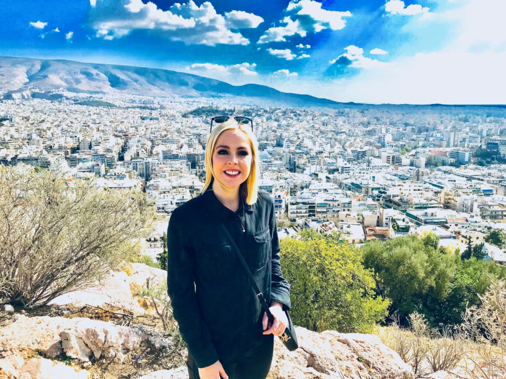

Σπούδασε στην Ελλάδα
Η Ελλάδα, ως μέλος της Ευρωπαϊκής Ένωσης ήδη από το 1981, έχει υιοθετήσει όλα τα υψηλά πρότυπα και έχει επενδύσει πολλά στον τομέα της εκπαίδευσης, με ιδιαίτερη έμφαση στην τριτοβάθμια. Τα ελληνικά πανεπιστήμια ξεχωρίζουν στα Βαλκάνια και βρίσκονται ψηλά στην κατάταξη τόσο των πανεπιστημίων της Ευρώπης αλλά και του κόσμου. Η υψηλή ποιότητα σπουδών, οι σύγχρονες υποδομές, το εύρος των επιστημονικών κλάδων που θεραπεύουν και η συνεργασία τους με άλλα Διεθνώς Αναγνωρισμένα Πανεπιστήμια καθιστούν τα πτυχία των ελληνικών πανεπιστημίων πολύτιμα εφόδια για την συνέχιση της ακαδημαϊκής πορείας και την επιτυχημένη επαγγελματική σταδιοδρομία των αποφοίτων τους.
Αν κατέχετε πτυχίο πρώτου κύκλου σπουδών από πανεπιστήμιο του εξωτερικού και επιθυμείτε να συνεχίσετε τις σπουδές σας στην Ελλάδα, τότε η Αναγνώριση του Πτυχίου σας θα αυξήσει σημαντικά την πιθανότητα να σας δεχτούν !
Μπορείτε να ενημερωθείτε αναλυτικά για τα προσφερόμενα μεταπτυχιακά προγράμματα σπουδών και τις προϋποθέσεις τους στους ιστοχώρους των Ελληνικών Πανεπιστημίων
Εργάσου στην Ελλάδα
Η Ελλάδα δεν είναι μόνο ένας αγαπημένος τουριστικός προορισμός. Το θερμό μεσογειακό της κλίμα, με 275 μέρες ηλιοφάνεια ετησίως, το ταπεραμέντο των ανθρώπων, ο κοσμοπολίτικος χαρακτήρας της και ο πολιτισμός της κάνουν την ζωή και τη δουλειά στην Ελλάδα μια μοναδική εμπειρία που πρέπει να ζήσεις! Όλα τα παραπάνω, σε συνδυασμό με το σχετικά χαμηλό κόστος διαβίωσης και την σταθερότητα της οικονομίας, προσελκύουν στην Ελλάδα όχι μόνο χιλιάδες digital nomads κάθε χρόνο, αλλά επίσης ολοένα και περισσότερες διεθνείς επενδύσεις σε πολλούς τομείς της οικονομίας όπως η ναυτιλία, ο τουρισμός, το real estate, η παροχή υπηρεσιών υγείας, η πληροφορική, η γεωργία, η ενέργεια και πολλοί ακόμα.
Η κατοχή τίτλου σπουδών από Ελληνικό Πανεπιστήμιο και η Αναγνώριση του πτυχίου σου από κάποιο πανεπιστήμιο του εξωτερικού είναι το ισχυρότερο εφόδιο που μπορείς να διαθέτεις στο κυνήγι της επαγγελματικής σου επιτυχίας στην ελληνική αγορά εργασίας, μια αγορά με μεγάλες προοπτικές και ευκαιρίες!
Ιστορίες Επιτυχίας

Πάνε σχεδόν πέντε μήνες από τότε που άφησα το ήσυχο χωριό μου στην Αυστρία για να έρθω να εργαστώ στην Αθήνα ως...
Όταν το 2012 μου πρότειναν μία θέση εργασίας στην Ελλάδα, στην αρχή ήμουν πολύ διστακτικός. Τελικά την αποδέχτηκα και ήταν η καλύτερη απόφαση που πήρα...
Μέχρι πριν λίγα χρόνια εργαζόμουν σε μια μεγάλη εταιρία πληροφορικής στο Λονδίνο. Η ρουτίνα του γραφείου και ο θόρυβος της πόλης δεν μου άρεσαν καθόλου. Έτσι ένα...
Aθήνα
Δευτέρα εως Πέμπτη 9:00-12:00
Αγ. Κωνσταντίνου 54, Τ.Κ. 104 37
210 5281000
information_dep@doatap.gr
Θεσσαλονίκη
Δευτέρα εως Πέμπτη 9:00-12:00
Υπουργείο Μακεδονίας Θράκης – Διοικητήριο, Τ.Κ. 541 23
2313 501372 , 2313 501106 , 2313 501315
information_dep@doatap.gr
Χρήσιμοι σύνδεσμοι